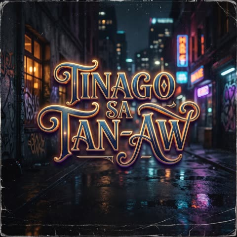

Vizcaya Sound · 2026-08-26
Tinago sa tan-aw
Lyrics
Gitan-aw tika samtang nag-istorya ka sa hangin
Kada katawa nimo nga gusto nakong maako
Nagpakaaron-ingnong kalma, apan sa ilawom—
Nalunod na diay ko sa imong mga tinan-awan
Higala ra ba gyud ang papel nga gitagana
O talawan lang ko motabok sa utlanan?
Nganong lisod man kaayong ilitok sa dila
Ang pagbati nga ikaw ray naghimo?
Usa ka sayop nga lihok, basin mausab ang tanan...
Naa koy tinagoan, dili nako pwedeng isulti
Tingalig mahibaw-an nimo, unya imo na hinuon kong likayan
Dugay na kaayo tika gihigugma, pero dili gyud nako masulti-sulti
Kay abi nakog... abi nakog mabati ra nimo bisan og dili ko magtingog
Kita sa eskina, nagkape sa tungang-gabii
Dikit atong abaga pero layo kaayo atong gilay-on
Gituyo nakog palangan ang matag lakang
Basin diay sa akong lihok mabasa nimo ang gitinguha
Gatan-aw nimo nga nagpahiyom sa uban—
Samtang ako, hilom nga nag-antos
Kung itug-an ba nako karong gabhiona
Magpabilin pa ba ka sa akong kilid?
O mahimo na lang kining istorya sa "basin pa"
Kining pagbati nga dugay nang nag-inusara?
Naa koy tinagoan, dili nako pwedeng isulti
Tingalig mahibaw-an nimo, unya imo na hinuon kong likayan
Dugay na kaayo tika gihigugma, pero dili gyud nako masulti-sulti
Kay abi nakog... abi nakog mabati ra nimo bisan og dili ko magtingog
Bisan dili magtingog...
(Oh-woah, hinaot mabati nimo)
Para ra gyud nimo
Hilom tikang higugmaon